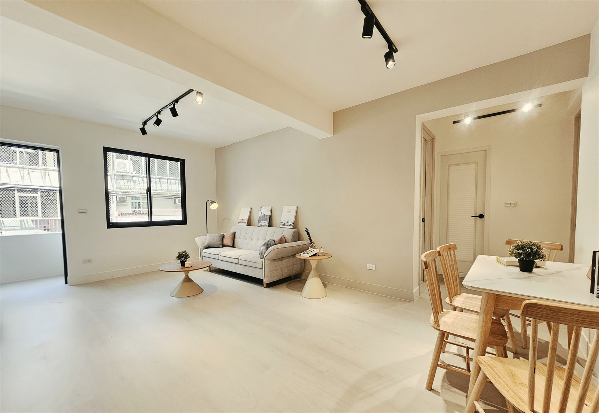
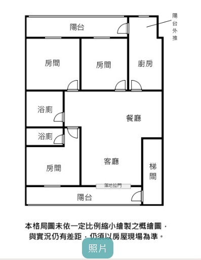

中和區大勇街 25 巷 · 公寓 3F／4F
景平大勇街3樓
售價以最新刊登資訊為準
- 3房2廳2衛・前後陽台
- 權狀 30.02 坪（主建物 24.04 坪）
- 景平站 步行約4分鐘（Google 地圖）
步行規劃，實際以現場為準。
PROPERTY PHOTOS
先看室內與陽台照片
左右滑動看照片，點一下可放大。
整體格局
模型無法載入，請查看原始圖面。
格局示意，非實測，家具為示意，實際以現場為準
拖曳旋轉 · 滾輪／雙指縮放 · 點選空間
鍵盤方向鍵旋轉、＋／−縮放、0 重設。圖面座標不代表方位。
AT THE PROPERTY
室內與陽台現場照片
點照片可以放大看
室內陳設為現場佈置，不隨房屋移轉。
PROPERTY PRESENTATION
THE ORIGINAL PLAN
回到原圖，
對照每個位置。
這張概繪圖沒有按比例畫。模型只呈現相對位置，尺寸、牆高及家具配置都不是實測結果。
上方兩個房間與廚房；中間左側兩間浴廁、右側餐廳；下方是房間、客廳與右側梯間。
原始圖面保留原樣供對照，標示內容仍須現場確認。
